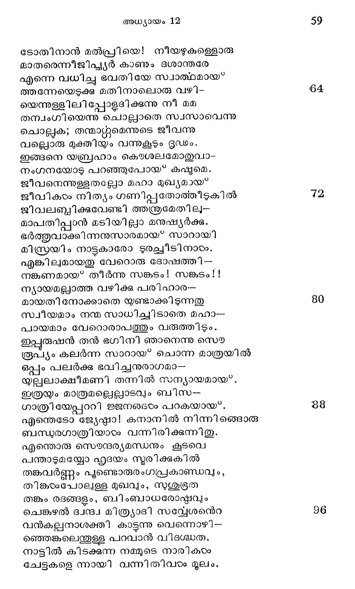

അബ്രഹാം സകുടുംബം കനാനിലേക്ക പുറപ്പെടുന്നതു
ന൯൯്വീസുവില് ചേരേണ്ടതായോ രുപനദി
കുന്നില് തടഞ്ഞു നില്ക്കുന്ന കണക്കിനേ
സല്ഫല ഭൂയിഷ്ഷമാകും കനാന്െറ്മേല്
വിപ്രതിപത്തി യുണ്ടെന്നുതോന്നുംവിധം.
ഹാറാനിലെത്തി ത്തളര്ന്നു വസിക്കുന്ന
കാനാന്പ്രയാണിയാ മബ്രാമൊ ടേകദാ
കാരുണ്യവാരിധിയാകും പരേശ്വരന്
ഗീരോതി യാവിര്ഭവിച്ചി ട്ടിതേവിധം. 8
എന്നാല് വിനിരടദ്ദിഷ്ടമാകുന്ന ദിക്കിലേ-
ക്കിന്നു നീ പോക ബന്പുക്കളേവിട്ടടന്
നിന്നേയൊരു മഹാവംശമാക്കിത്തീര്ത്തു
നിന്നുടെപേര് മഹത്താക്കിവച്ചുടുവന൯.
വിശ്വത്തിനു നീ യന൯ഗ്രഹമുത്തിയാം
പ്വിശ്വമനുഗ്രഹ പൂര്ണ്ണമാകുംത്വയാം
നിന്നേ യന൯ുഗ്രഹി പ്പോരനുഗ്ഗഹ്യരാം
നിന്നെ ശപിപ്പവര് ശപ്പരുമായിടും. 16
എന്നിങ്ങനെ മധുബിന്ദുക്കളിററിടും
സുന്ദരാശിസ്റത്കകളായ സുമങ്ങളേ
അബ്രാമി നുത്തമാംഗത്തില് ഒചാരിയവെ
വിഭ്ൂമമെല്ലാ മകന മനക്കാമ്പി-
ലല്ലേതരാനന്ദ മുണ്ടായി യാഹ്വതന്
കല്പന ന്രമൂശിരസ്തനായ* കേട്ടടന്
ഭൂത്ൃരും, ഭാര്യ, സഹോദരപുത്രനാം
ലോത്തും, മൃഗങ്ങളും, ധാന്യധനാദിയ--
മൊക്കവേ ശേഖരിച്ചാറാന്പുരേനിന്നു
തക്കത്തിലങ്ങുതിരിച്ചു കനാന്നോക്കി
എത്തിക്ക, താത്ഥനായ* കാനാന്യര് വാഴുമ--
ക്കില് മുമുക്ഷ സായ്യജ്യത്തിലെന്നപോല്
തത്രൈവ തനെറ നേതാവാം യഹോവണ്ക്ക
വിതര്രാസമുണ്ടാക്കി യജ്ഞപ?ീഠം ജവാല്
ആരാധനംചെയ്തക നേരമബ്രാമിനാ-
യാരാജ്യമേകുമെന്നോതി പരാപരന്.
അബ്രാം കാനാനില് മേവുന്നോരുവേളയി--
ല്ൃത്ഭവിച്ചത്ൃഗ്രമായൊരു പഞ്ഞവും
നാട്ടില് ഭജിപ്പതിന്നുള്ളവയൊട്ടുമേ
കിട്ടാതെവന്നു മുട്ടായിതെല്വാടവും.
ഭാരിദ്രമെന്നപോല് ഭീഷണമായൊന്നു
പാരിൽ പറവാനരുതൊരുവക്കുമേ
ക്വാരിത്രശുദ്ധിയും ഭൂഷണാട്യങ്ങളം
തീരെപ്പണയത്തിലാക്ക മിട്ദേവത.
മാനവന് തന്െറ പ്രയത്%ങ്ങളൊക്കയും
നൂനമുദരത്തിനായ* മാത്രമല്യോ?
വല്പതുമൊന്നകത്താക്കിയില്ലെങ്കിലൊ
പള്പോലൊന്നിനും കൊള്ളാതെയാം നരന്.
ക്ഷാമഭ്രതത്തിന് ഭയങ്കരബാധയാല്
ഹാ! നരമാംസവും ഭക്ഷിച്ചുപോകുന്നു.
തള്ള മാര് തങ്ങടെ പിളളകളെക്കൊന്നു
തൊള്ള നിറച്ചതായുണ്ടു വൃത്താന്തവും.
കാനാനിൽല്നിന്നു മിസ്രയീമിലേക്കു
ഇത്ഥ മതിക്രൂരനായ യോദ്ധാവി നോ-
ടിത്തിരിയേററു നില്യാന് കഴിയായ്ക്കയാല്
മിസ്രരയീമെന്നുള്ള നാട്ടിവിവേക--
മിശ്രബുദ്ധ്യാ കടന്നീടിനാന് ദീനനായ*,
ഭക്ഷണത്തിന്വക യന്വേഷണം ചെയ്ത
രക്ഷിതാവാകും പരേശന് നിയമിച്ച
നസുക്ഷമാഭാഗം വെടിഞ്ഞന്യദേശത്തു
രക്ഷണം തേടുകദുല മബ്രാമിനു
ശിക്ഷയായെന്നപോല് സംഭവിച്ചുള്ള വൈ-
ലക്ഷ്യമീ വാത്തമുഖേന യറിഞ്ഞിടാം.
ഈജിപ*തു നാട്ടി നടുത്തപോ തബ്രഹാം
രാജീവലോചനയാകിയ ഭാര്യയോ-
ടോതിനാന് മൽപ്രിയെ! നീയഴുകുള്ളൊരു
മാതരെന്നീജിപ്ലയര് കാണും ഭശാ൯രേ
എന്നെ വധിച്ചു ഭവതിയേ സ്വാത്ഥമായ്
തന്നേയെടുക്ക മതിനാലൊരു വഴി-
യെന്നുള്ളിലി പ്പോളദിക്കുന്നു നീ മമ
തമ്വംഗിയെന്നു ചൊല്ലാതെ സവസാവെന്നു
ചൊല്ലുക; തന്മാന്റ്റമെന്നുടെ ജീവന്നു
വല്ലൊരു മുക്തിയും വന്നുകൂടും ദൃഡം.
ഇങ്ങനെ യബ്രഹാം കെൌശലമോതുവാ-
നംഗനയോട പറഞ്ഞുപോയ? കഷ്യമെ.
ജീവനെന്തള്ളതല്ലോ മഹാ മുഖ്യമായ
ജീവികം നിത്യം ഗണിപ്പുതോത്തീടുകില്
ജിവലബ്ദിക്കവേണ്ടി ത്തന്ത്രമേതിലു-
മാപതിപ്പാന് മടിയില്ലാ മനുഷ്യര്ക്കു.
ഭര്ത്തുവാക്കിന്നനുസാരമായ*' സാറായി
മിസ്രയിം നാട്ടുകാരോ ടുരച്ചീടിനാരം.
എങ്കിലുമായതു വേറൊരു ദോഷത്ത്ി--
നങ്കണമായ" തീര്ന്നു സങ്കടം! സങ്കടം 1!
ന്യായമല്ലാത്ത വഴിക്ക പരിഹാര-
മായതി നോക്കാതെ യണ്ടാക്കിടുന്നതു
സ്വീയമാം നന്മ സാധിച്ചിടാതെ മഹാ-
പായമാം വേറൊരാപത്തും വരുത്തിടും.
ഇപ്പുരുഷന് തന് ഭഗിനി ഞാനെന്നു സൌ
രൂപ്യം കലര്ന്ന സാറായ* ചൊന്ന മാത്രയില്
ഒപ്പം പലര്ക്കു ഭവിച്ചനുരാഗമാ-
യുല്ലലാക്ഷീമണി തന്നില് സന്യായമായ്.
ഇത്രയം മാത്രമല്ലെല്ലാടവും ബിസ-
ഗാത്രിയേപ്പററി ജജനങ്ങയം പറകയായ്.
എന്തെടോ ജ്യേഷ്മാ! കനാനില് നിന്നിങ്ങൊരു
ബന്ധരഗാത്രിയാടം വന്നിരിക്കുന്നിതു.
എന്തൊരു സൌന്ദര്യമന്ധനും കൂടവെ
പന്താടുമയ്യോ ഹൃദയം സുരിക്കുകില്
തങ്കവര്ണ്ണം പുണ്ടൊരുരംഗപ്രകാണ്ഡവും,
തിങ്കരംപോലുളള മുഖവും, സശ്ഭൂരത
തങ്കും രദങ്ങളം, ബിംബാധരോദ്കവും
ചെങ്കല് ദ്വന്ദ്വ മിത്ര്ലാദി സന്യേശന്െറ
വന്കല്വനാശക്തി കാട്ടന്നു വെന്നൊഴി--
ഞ്ഞെങ്കലെന്തുള്ള പറവാന് വിദശ്ധത.
നാട്ടില് കിടക്കുന്ന നമ്മുടെ നാരികരം
ചേട്ടകളെ ന്നായി വന്നിതിവാം മൂലം.

അച്ചനുക്കച്ചന് വരുന്നനേരത്തഹോ
കൊച്ചച്ചനോടിപ്പരിയത്തു പോകണം
എന്നല്പയോ വന്നിരിക്കുന്നതംബര--
തന്വംഗിയാണിവളെ ന്നതു നിര്ണ്ണയം.
ചൊല്പിനാന് മററവന്: നമമുടെ തമ്പുരാന്
കല്യന് ഫറവൊ തിരുമേന്മി യിന്നലെ
പല്ുക്കിലൊന്നു തന്നാടംക്കാര് വശമയ
ച്ലസല്ഗാത്രിയെ യത്രവരുത്തുവാന്
നിഷ്ഠര്യോ ടാജ്ഞ ചെയ്യിരിക്കുന്നതു
മുഷ്ണരന് നീ യറിയാഞ്ഞതെന്താണഹോ !
രതഅഅമെല്ലാ മെന്നവണ്ണ മീയോഷമാര്--
രത്നവും രാജഭോഗത്തില് പെടേണ്ടതെ--
ന്നച്ഛേട്യമാ മാജ്ഞ നല്കീയിരിക്കുന്നി-
തച്ഛന്നകാമം ന്റപന് ശരരുതാപനന്
ഇത്ര പുളിശ്ലേരിയാണി പ്പറോവെന്നു
മാത്രമറിഞ്ഞിരുന്നില്ല ഞാന് മുന്നമെ.
ഇപ്പോരം വരുമഹോ പല്ലക്കുകാര് ഫറോ--
വല്ഫുല്പനേത്രനായ* കാത്തിരിക്കുന്നിതാ
മന്മഥ പീഡന്ക്കു ധര്മ്മമൊ മര്മ്മമോ
കമ്മമോ ഭമ്മമോ നോക്കേണ്ടതില്ലിനി.
ഈവിധവ മിതിലേററ മധികവും
ധീവരന്മാര് കൂടി ഭാഷിച്ച കൊള്ളവേ
രാജനിയോജ്യരടുത്തു വന്നബ്രാമി -
നാചാര മാരാല് കഴിച്ചുരച്ചാരിദം.
ഭോജനത്തിന്െറ വിലോപം നിമിത്തമായ*
രാജരാജന് ഫറവോനേ ശര്ണമാ-
യാശ്രയിച്ചത്ര കനാന് മരുഭൂവില്നി --
ന്നാഗമിച്ചുള്ള വൈദേശികവര്യ! നിന്
സോദരിയാകും രമണിയേ മിസ്രയി൦--
മേദിനീന്ദ്രന് നിജ പതിയാക്കീടുവാന്
ചേതസ്സലിഞ്ഞരുടം ചെയ്യുന്നു നിങ്ങടെ
ശാതത്തിലാണു സന്തോഷം ഫറോന്നു മേല്
ഉദ്വാഹമിലുാത്ത സ്വന്തം ഭഗിനിയേ--
യുദ്വേഗമെന്യേ സമീക്ഷിപ്പതാരുവാന് ?
എത്രയോ സങ്കടമുണ്ടാക്കിടും സ്വസാ
ഭര്ത്തുവിരഹിതയായിരിക്കും വിധൌ.
ആകയാല് യോഗ്യ പുരുഷനാം നിന്നുടെ
ശോകടമായൊരീ ഭാരം നരേശ്വരന്
താനേ വഹിപ്പതേക്കാളം നിനക്കഭി --
മാനമായെന്തൊന്നു സാദ്ധ്യമായ്യണ്ടെടോ?
രാജാവു തന്നുടെ സ്യാലനായീടിലോ
ഭോജനപാനാദി ഭംഗ്യാ നടന്നു പോം.
നാട്ടിലൊരുവനും ലഭ്യമല്ലാ പ്പുദം
കിട്ടം നിനക്കു വ്യയം തെല്ലമെന്നിയേ
സവ്വജനബഫഹുൂമാനാര്ഹനായി നീ
നിധ്യിവാദം വാഴ മുഴിയിലെന്നുമേ
എന്താണു ചൊല്ലുവാനുള്ള തരക്ഷണം
ചിന്തിച്ച ചൊൽക നീ ചിന്തകാഗ്രേസര!
ഇത്ഥം പറഞ്ഞതു കേട്ടട നബ്രഹാ
മുത്തരം ചൊല്ലാതിരുന്നു വിവശനായ.
സാറായി തന്നുടെ സോദരിയെന്നവന്
വീറോടുരച്ചതിന് വൈഷമൃ്യമെന്തെന്നു
തേറുവാ നിപ്പോല് തുടങ്ങിയസത്യോക്തി
മാറില്ലതിന് ഫലം കാട്ടാതൊരിക്കലും.
ഭാര്യയെന്നുള്ള യഥാര്ത്ഥ മുരത്തയോ?
സാറയെ ഭൂമിപന്നായിക്കൊടുക്കയോ ?
എന്താണു വേണ്ടതെ ന്നുള്ളറപ്പില്ലാതെ-
യന്തരംഗം ഭൂശം തിണ്ടാടി കഷ്യമേ.
രണ്ടിലേതെങ്കിലും ചെയ്തിലപ്കട-
ക്കണ്ടില് പതിക്കുമെന്നിണ്ടലോടായവന്
രണ്ടു തലയും മുറിച്ച കുഴല് സമം
വേണ്ടതറിയാതെ നിന്നു വിടപിപോല്.
ഒന്നും പറയാതെ നില്ക്കുന്നൊരീ നില
നന്നേവിരോധശമായ്ക്കുന്നു നിയോജ്യര്ക്ക.
തന്നിമിത്ത മവര് ചൊന്നാരിവനുടെ
ഷിന്നത കണ്ടാലിവാം ഭാര്യയാണെന്നു
തോന്നുമാര്ക്കം സ്വസാവെന്നു പറഞ്ഞതു
കന്നം തിരിഞ്ഞുള്ള കള്ളമായ* വന്നിടാം.
എന്നാലുമെന്തു നമുക്കിന്നരനുടെ
സമ്മതം വേണ്ടാ കുളത്തിന്റനുമതി
വേണമോ വെള്ളം കുടി പ്ലപാനിവന് പരം
കാണിക്കുവാനെന്തു നാണിപ്പതെന്നിയെ?
സ്വന്തമാം നാടു വെടിഞ്ഞിവിടെ വയര്
വെന്തു വന്നോനാണിയാളതാല് പെണ്ണിനെ
രണ്ടു മൂന്നാളകരം കൂടിപ്പിടിച്ചടന്
തണ്ടിലാക്കീടുവിന് മിണ്ടുകില്ലാരുമെ.
രാജഭൂത്യന്മാരുരച്ചി ഭം സാറയെ
നീചമാം മട്ടില് പിടിച്ചു പല്ക്കതില്
വേഗമഃടച്ചു ഫറോവിനെറ മന്ദിരം
പൂകിച്ച പുര്ണ്ണ വിജയഘോഷര്ത്തോടും.
സാറാ മിസ്രയീം രാജധാനിയില്
ആമിഷത്തിങ്ക ലതിയാം കൊതിയൊടു
ഭീമക്ഷ്യാത്തനാം ശാര്ട്ര ല മെന്നപോൽ
കാത്തിരുന്നീടുന്ന രാജാവിവളമാ--
യാത്ത സന്തോഷം കഴിച്ചു കുറേ ദിനം.
തന്നുടെ പതിയും മന്നവന് താനുമാ--
യൊന്നിച്ചിവണ്ണം സുഖിച്ചു വാഴ്ം വിധൌ
വര്ണ്ണ്യമല്ലാത്തൊ രാതങ്ക മബ്രാമിനു
വന്നു വര്ദ്ധിച്ചതിലെന്താണു വിസ്മയം?
സ്വന്ത കുററംകൊണ്ടു മന്നവന് തന്പ്രിയ
കാന്തയെ തട്ടി യെടുത്ത തോക്കാവതോ ?
ഉള്ളം ദഹിച്ചു കഠിനമായ നീറിയ്യം
വെള്ളം നയനത്തില് നിന്നൊലിച്ചും പല
കൊല്ലങ്ങളെന്നപോ ലേതാന്ദി നമവ-
നുല്പംഘനം ചെയ്ത ദുഃസ്വപ്ലസന്നിഭം.
എന്തു ശുക്കാകിലു മിഷ്യരോടോതിയാ--
ലന്തരാശ്വാസം വരുമെന്നിരിക്കിലും
ഉള്ള യാഥാത്ഥ്യ മൊരുത്തനോടെങ്കിലും
' ചൊല്ലാന് കഴിഞ്ഞില്ലതാണതിസങ്കടം.
വല്ലവിധത്തിലും വീണുപോയാലതു
വല്പലന്തിയായ* വന്നുകൂടുമെന്നോര്ക്കയാല്
ഉളളിലശേഷമൊതുക്കി യമുക്കിവ-
ചുള്ളം പൊടീയുമാ റബ്രാം നടന്നുതേ.
ഇക്കഥയൊന്നുമറിഞ്ഞതില്ലെങ്കിലും
സല്ക്കൃതനാകയാ ലീജിപ*തു ഭൂപതി.
സ്യാലനെന്നുള്ളൊരു പ്രത്യേക ചിന്തയാല്
കാലികളാദിയായുള്ള മഹാധനം
നല്കിനാനബ്രാമിനെന്നുവരികിലും
പുല് കിയില്ലാനന്ദ മാബ്രാമ്യമാനസം.
മൂത്യവിന് വായിലിരിക്കുന്നവന്നൊരു
ബിസ്ക്ററു കിട്ടിയാലുണ്ടോ ലവം ഫലം
തന്നുടെ പത്നിയെ യന്യനു നല്കിയ
ദുര്ന്നുര നാശ്വാസ മുണ്ടാവതെങ്ങിനെ ?
ചിന്തയില് സന്തനം വെന്തെരിഞ്ഞീശ്വര
ചിന്ത വര്ദ്ധിച്ചൊ രബ്രാം നിജമന്തുവേ
ബന്പുവാമീശനന്െറ സന്നിധൌ ചെന്നുചൊ-൦
ന്൬ന്തരംഗത്തിലാശ്വാസം വരുത്തിനാന്.
ഈശ്വരന് മുന്പില് ക്ഷമാപണം ചെയ്തയാല്
ഈശന് പ്രസാദിച്ചു മാപ്പരുളീട്ടവന്
ക്ലേശം കുറപ്പാനുറച്ചു; രിപുകല-
നാശം വരുത്താനു മാശരനാശനന്
രാജനേയും കുടുംബത്തെയും പെട്ടെന്നു
വാചാമഗോചരമായ രോഗങ്ങളാല്
പീഡനം ചെയ്ത ഭക്തസ്വാപഹാരമുരം-
ചൂടെഴും ദേവന് സഹിക്കില്ല തെല്ലമേ.
നിസ്കൂല്യമാം രോഗബാധ കാരണം
മിസ്രയീം ഭൂപതി പ്രാശ്മശി കരെക്കൊണ്ടു
നോക്കിച്ചളവി ലബ്രാമിനന്ന്െറ ഭാര്യയേ
പക്കല്വെച്ചുള്ളതിന് ദോഷമെന്നോതിനാര്.
ആയതുകെട്ട വിഷമിച്ചു മിസ്രയീം
നായകന് വഞ്ചന വഞ്ചനയെന്നോതി
അബ്രാമിനെയൊരു വഞ്ചകനായി ഞാന്
സ്വപ്പേപി കണ്ടില്ല കഷ്ടമോത്തോളവും.
ചന്ദനമെന്നു കരുതിയമാനവന്
വന്നിതു കാരസ്ക്കരമാ യുടനടി.
വേഗംവരുത്തുവി നായവനേ നമു--
ക്കാകുലം വേണ്ടാ കൊടുക്കാം വധുവിനെ.
ഭൂുത്ൃയരാ ലാനീതനാക മബ്രാമിനോ
ടത്യരംചോദിച്ചു രാജാവ്യ രുഷ്ടനായ്:
എന്തിനാണെന്നെ ചതിച്ചതു? സോദരി --
യെന്നു നീ ചൊന്നതുമൂലമാണന്നഹം
കുന്നല്മിഴിയായ സാറയെ യെന്നുടെ
മാന്യമഹിഷിയാ യംഗീകരിച്ചതും.
ഇക്കടുംകുററത്തി നൊന്നും പ്രതിക്രിയ
ഇക്കൈ നടത്തുകില്ലാകയാല് നിന്നുടെ
പതിയേയും ധനധാന്യദികളെയും
കൈക്കലാക്കീട്ട പുറപ്പെട്ടുപോക നീ.
ഇത്ഥം ഫറോവിനാല് ശാസിതനായ്* ക്ഷണം
പ്രസ്ഥിതനായാ നവിടെനിന്നബ്രഹാം.